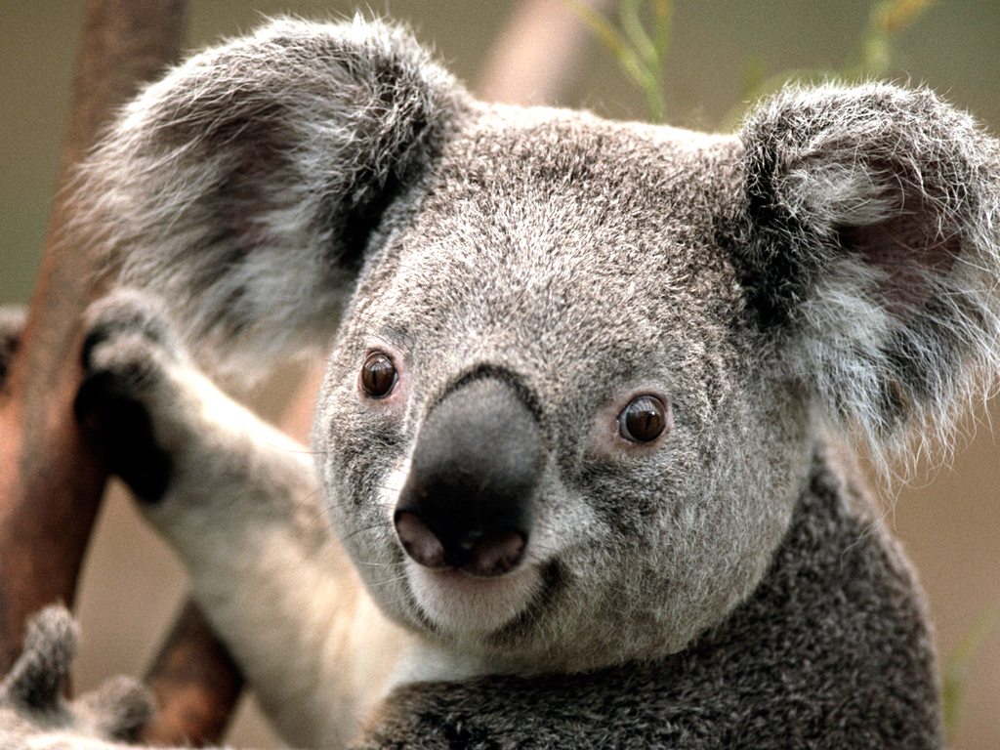

KOALA
Koalas are cute, cuddly-looking marsupials from Australia, often mistaken for bears but they are not bears at all. They are marsupials, which means females carry their babies in a pouch. They live in eucalyptus forests along the eastern coast of Australia. Koalas are famous for sleeping a lot - up to 18 to 22 hours a day - because their diet of eucalyptus leaves is very low in energy and slightly toxic, so they need to conserve energy to digest it. An adult koala weighs around 9 to 15kg and has thick grey fur, big fluffy ears, and a large black nose.
What helps koalas survive is their super specialized body. They have two thumbs on each hand to grip branches tightly, and rough pads on their hands and feet that work like sandpaper to stop them slipping. Their stomach has special bacteria that breaks down the tough, poisonous eucalyptus leaves that would kill most other animals. They rarely need to drink water because they get almost all their moisture from the leaves they eat - the word 'koala' is even thought to mean 'no drink' in the local Dharug language.
They are very quiet and solitary animals, spending most of their lives alone in trees. They eat almost exclusively eucalyptus leaves, picking only certain types. A female carries one tiny baby called a joey in her pouch for about six months before it climbs onto her back.
WHERE WILL YOU FIND THEM
You will find the koalas at pen E29, in the Australian exhibit near the entrance.